Accessibility for Journalists
Web accessibility refers to the practice of making it possible for a disabled person to access and use the web.
This site will show journalists how they can make their work more accessible to people with disabilities, but it also be helpful and useful for anyone who wants to learn more about web accessibility.
Why does accessibility matter?
- 15% of the people in the world have a disability
- 26% of adults in the U.S. have a disability
- 97.4% of the home pages for the top 1 million websites have some sort of accessibility error
What are types of disabilities that affect how people use the web?
- Visual
- Auditory
- Physical
- Cognitive
- Speech